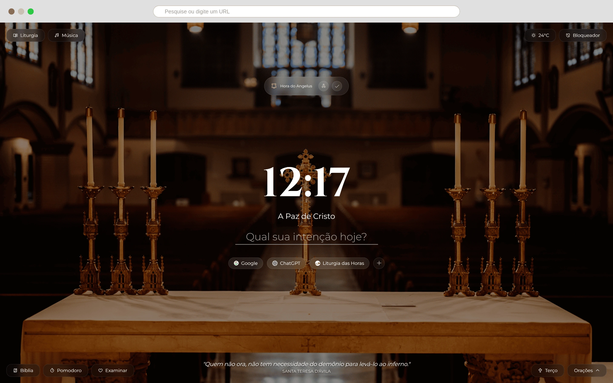

Transformação
Veja a diferença que o Ora faz
Arraste o controle para comparar uma nova aba comum com o ambiente contemplativo do Ora
Aba Comum

Com Ora

Antes
- Atalhos para sites de distração
- Nenhum propósito espiritual
- Ambiente frio e impessoal
- Foco disperso
Com Ora
- Oração e contemplação a um clique
- Integração fé + produtividade
- Beleza que eleva o espírito
- Foco consciente e disciplinado